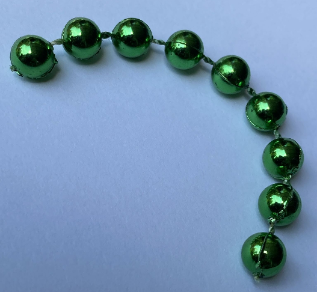
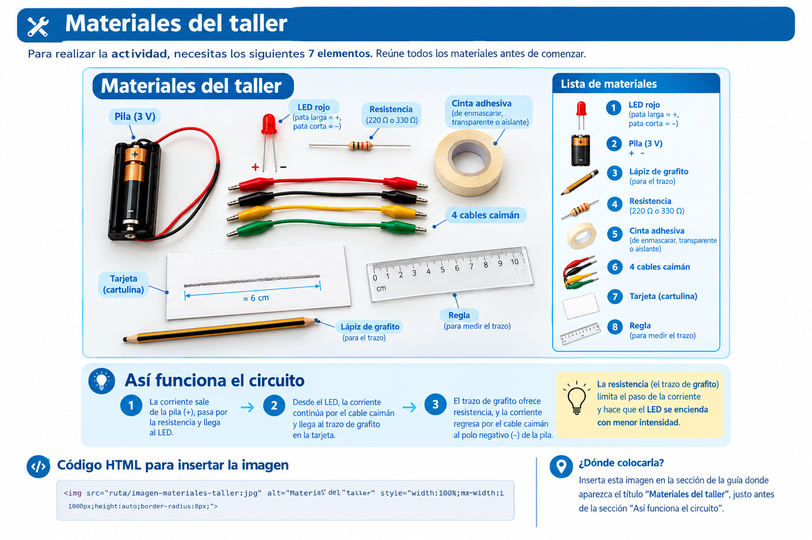
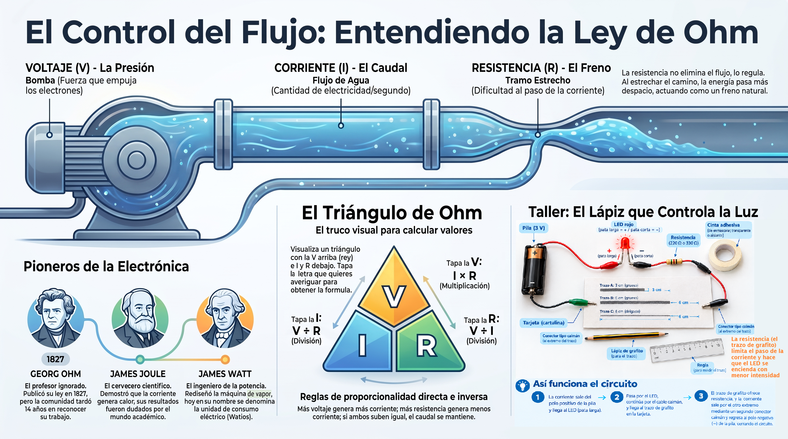

🔵 Presión, caudal y freno
🚰 El tubo estrecho
Imagina un sistema hidráulico en el que una bomba empuja el agua por una tubería. Todo funciona bien. Pero un día alguien cambia un tramo de la tubería por uno mucho más estrecho.
¿Qué pasa? La presión de la bomba sigue siendo la misma. La tubería sigue conectada. Pero el agua tarda más en pasar, porque el camino es más difícil. El freno que acabamos de añadir se llama, en electrónica, resistencia.

💡 Idea clave: el freno no elimina el flujo. Solo lo regula. La energía sigue llegando, pero pasa más despacio.
📐 La relación entre presión, caudal y freno
En un circuito eléctrico, las tres magnitudes se relacionan de una forma muy parecida a la del sistema hidráulico:
- Voltaje (V): la presión que empuja. Equivale a la bomba de agua. Se mide en voltios.
- Corriente (I): el caudal que circula. Equivale a la cantidad de agua que pasa por segundo. Se mide en amperios.
- Resistencia (R): el freno al paso. Equivale a lo estrecho que sea el tubo. Se mide en ohmios (Ω).
Los ingenieros usan tres letras para abreviar estas magnitudes: V para el voltaje, I para la corriente, R para la resistencia. Memorizar estas tres letras te servirá para el resto del curso, porque aparecen en todas las fórmulas y en todos los esquemáticos.
🔎 Regla de proporcionalidad:
- Si aumentas la presión (más voltaje), pasa más agua (más corriente).
- Si aumentas el freno (más resistencia), pasa menos agua (menos corriente).
- Si aumentas ambos en la misma proporción, el caudal no cambia.
🔺 El triángulo de Ohm
Esta relación entre las tres magnitudes es tan perfecta que el científico alemán Georg Ohm la describió con una fórmula matemática. Pero antes de ver la fórmula, vale la pena conocer el truco visual con el que los ingenieros la recuerdan.

- Si quieres el voltaje (V): tapa la V con el dedo. Lo que queda es I × R (I multiplicado por R).
- Si quieres la corriente (I): tapa la I. Lo que queda es V ÷ R (V dividido entre R).
- Si quieres la resistencia (R): tapa la R. Lo que queda es V ÷ I (V dividido entre I).
💡 Truco para recordar: la V está arriba, como un rey. Las otras dos (I y R) están abajo, lado a lado. La raya del medio es la línea de la fracción.
🌍 Aplicación real: el divisor de voltaje
¿Para qué sirve la ley de Ohm en la vida real? Imagina que tienes una fuente de 5V y necesitas alimentar un sensor que solo funciona con 3.3V. Si lo conectas directo a los 5V, podrías dañarlo. La solución es repartir el voltaje.
Con dos resistencias en serie, puedes crear un divisor de voltaje: la resistencia más grande se queda con más tensión, y la más pequeña con menos. Es una de las aplicaciones más comunes de la ley de Ohm.

✏️ Taller: El lápiz que controla la luz
Vamos a poner en práctica la ley de Ohm con un experimento sencillo. El grafito del lápiz conduce la electricidad, pero con cierta dificultad: es una resistencia variable que puedes modificar a tu antojo.

Recuerda: un LED es una pequeña luz que se enciende al paso de la corriente.

🧰 Materiales
Antes de comenzar, reúne los ocho materiales. Si alguno te falta, puedes buscarlo en casa o pedirlo prestado en el colegio.
| # | Material | Detalle |
|---|---|---|
| 1 | LED rojo | Pata larga = positivo (+), pata corta = negativo (−) |
| 2 | Pila (3 V) | Con su portapilas, para conectar los cables |
| 3 | Lápiz de grafito | Preferiblemente blando (2B o más blando) |
| 4 | Resistencia | De 220 Ω o 330 Ω, para proteger el LED |
| 5 | Cinta adhesiva | De enmascarar, transparente o aislante (cinta negra) |
| 6 | 4 cables caimán | De colores distintos, para identificar cada conexión |
| 7 | Tarjeta (cartulina) | Tamaño carta o A4, para dibujar el trazo |
| 8 | Regla | Para medir los trazos con precisión |
🔌 ¿Cómo funciona el circuito?
El recorrido de la corriente es siempre el mismo:
- Sale de la pila (+) y pasa por la resistencia.
- Llega al LED y lo enciende.
- Continúa por el cable hasta el trazo de grafito.
- El trazo ofrece resistencia: cuanto más largo, más frena la corriente.
- Regresa por el cable al polo negativo (−) de la pila, cerrando el circuito.
💡 Recuerda: el trazo de grafito es tu resistencia variable. Cuanto más largo y delgado sea, más frenará la corriente y menos brillará el LED.
🛠️ Construcción paso a paso
-
Dibuja tres trazos con el lápiz:
- Trazo A: 3 cm de largo, grueso (repasa 5 veces).
- Trazo B: 6 cm de largo, grueso.
- Trazo C: 6 cm de largo, delgado (un solo trazo).
- Fija la resistencia con cinta sobre el papel, cerca de los trazos.
- Conecta el circuito: pila → resistencia → LED → trazo de lápiz → pila. Pide ayuda a un adulto para sujetar los cables.
-
Observa el brillo en cada trazo. Compara con lo que
sabes del sistema hidráulico:
- ¿Cuál trazo sería como un tubo ancho y corto?
- ¿Cuál sería como un tubo estrecho y largo?
-
Dibuja esta tabla en tu bitácora y complétala marcando
con una X el brillo que observes:
Trazo Largo Grosor 😃 Brillante 😐 Medio 😞 Apagado A 3 cm Grueso B 6 cm Grueso C 6 cm Delgado
❓ Pregunta guía
¿Por qué el trazo largo y delgado apaga más el LED? Explícalo usando las palabras bomba, caudal y tubo estrecho.
💡 ¿Sabías que…? Las redes de inteligencia artificial funcionan con millones de conexiones que controlan cuánta información pasa de una neurona a otra. Esas conexiones se llaman pesos. Un peso alto deja pasar mucha señal; un peso bajo la bloquea. ¿Te suena familiar? Es exactamente lo que hace una resistencia con la corriente: controlar cuánto pasa.
💡 Sobre instrumentos de medida: en este taller no necesitas instrumentos especiales. La comparación visual entre trazos es suficiente para descubrir la relación.
⚠️ Seguridad: trabaja siempre con 3V o 5V. Nunca uses voltajes de pared (110V o 220V). No olvides la resistencia de protección con el LED.
📜 Tres personajes que no se rindieron
La ley que estás estudiando no la descubrió una sola persona. Tres científicos de tres países aportaron piezas clave, y cada uno enfrentó dificultades para que su trabajo fuera reconocido. Sus historias tienen mucho que enseñarnos.
⚡ Georg Ohm — El profesor al que no le creyeron
Ohm nació en Erlangen, Baviera (actual Alemania), en 1789, hijo de un cerrajero. Trabajó durante años como profesor de secundaria en condiciones modestas. En sus ratos libres experimentaba con cables y pilas. En 1827 publicó su descubrimiento, pero la comunidad científica no lo aceptó de inmediato. Se sintió tan decepcionado que se retiró de la investigación durante varios años. Solo en 1841, cuando la Royal Society de Londres le otorgó la Medalla Copley, su trabajo empezó a ser reconocido. A los 60 años, finalmente, fue nombrado profesor de universidad.
🔥 James Joule — El cervecero científico
Joule nació en Salford, Inglaterra, en 1818, en una familia rica de cerveceros. Durante la mayor parte de su vida trabajó en la cervecería familiar, y aprovechaba las noches para experimentar con electricidad y calor. En 1840 formuló la ley que lleva su nombre: la corriente eléctrica produce calor en proporción a su intensidad. Sus contemporáneos dudaban de sus resultados porque venía del mundo industrial, no del académico. Fue otro científico importante quien lo apoyó públicamente en 1847. Hoy la unidad de energía lleva su nombre.
⚙️ James Watt — El ingeniero que le dio nombre a la potencia
Watt era un fabricante de instrumentos en Escocia. Su gran aporte fue rediseñar la máquina de vapor para que no perdiera energía en cada ciclo, lo que cambió la industria para siempre. A diferencia de Ohm, Watt vivió para ver su invento reconocido.
En 1882, mucho después de su muerte, se decidió que la unidad de potencia se llamara watt en su honor. Por eso, cuando hoy hablamos del consumo de un aparato (una bombilla de 60 W, un cargador de 20 W, un centro de datos que consume millones de vatios), estamos usando el nombre de Watt sin darnos cuenta.
Los tres tuvieron algo en común: no se rindieron cuando otros dudaron de ellos. Su trabajo es la base de toda la electrónica moderna.
Fuentes: biografías de la Royal Society, la Enciclopedia Británica y archivos históricos de ingeniería.🗺️ Repaso visual

Presión, caudal y freno
Dale play y en 6 minutos descubrirás:
- 🚰 El tubo estrecho: por qué frenar el agua es exactamente lo que hace una resistencia.
- 🔺 El triángulo de Ohm: el truco visual que usan los ingenieros para no memorizar tres fórmulas.
- ✏️ El trazo de lápiz: cómo verificar la ley de Ohm con algo que ya tienes en casa.
- ⚡ El profesor ignorado: la historia de Ohm y por qué tardaron 14 años en creerle.
💡 Escúchalo en familia y comenta cuál de los cuatro temas te resultó más claro.